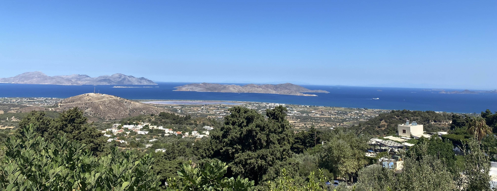

Minusta

22-vuotias elämää ja hyvää ruokaa rakastava nainen


Päiväreissu Malagaan
Malaga, Espanja | Toukokuu 28, 2024

Reissun puolivälissä teimme päiväreissun Malagaan. Junamatka kesti hieman alle tunnin, ja hintaa tuli alle 4 euroa per henkilö. Malaga on noin 600 000 asukkaan kaupunki, joten sieltä löytyy runsaasti hyviä ravintoloita ja shoppailumahdollisuuksia. Suosittelen tilaamaan erilaisia tapaksia ja espanjalaisia viinejä.
Malagan katedraali
Malaga, Espanja | Toukokuu 28, 2024

"La Manquita"
Katedraalin rakentaminen alkoi 1500-luvulla, ja se kesti noin 200-vuotta. Tämänkin jälkeen se jäi osittain keskeneräiseksi. Katedraalin ulkokuori on hyvin koristeellinen, ja se on ottanut vaikutteita renessanssista sekä goottilaisuudesta. Toinen katedraalin torneista on jäänyt rakennusvaiheessa kesken.
Zia
Kos, Kreikka | Elokuu 08, 2023
Matkustimme kesällä 2023 Kosille Kreikkaan. Henkilökohtaisesti en juurikaan pitänyt saaresta, vaikka sitä meille kovasti suositeltiinkin. Vietimme viikon keskitasoisessa All Inclusive -hotellissa, jonka näin jälkeenpäin olisin voinut valita hieman tarkemmin. Hotellilla oli kuitenkin oma pikkukiviranta, josta annan lisäpisteitä. Saarella on vain muutama hiekkaranta, jotka olivat tupaten täynnä turisteja. Paikallisbussilla pääsimme helposti ja edullisesti hotellilta suoraan Kosin keskustaan. Paikallinen ruoka oli hyvää ja lämpöä riitti.